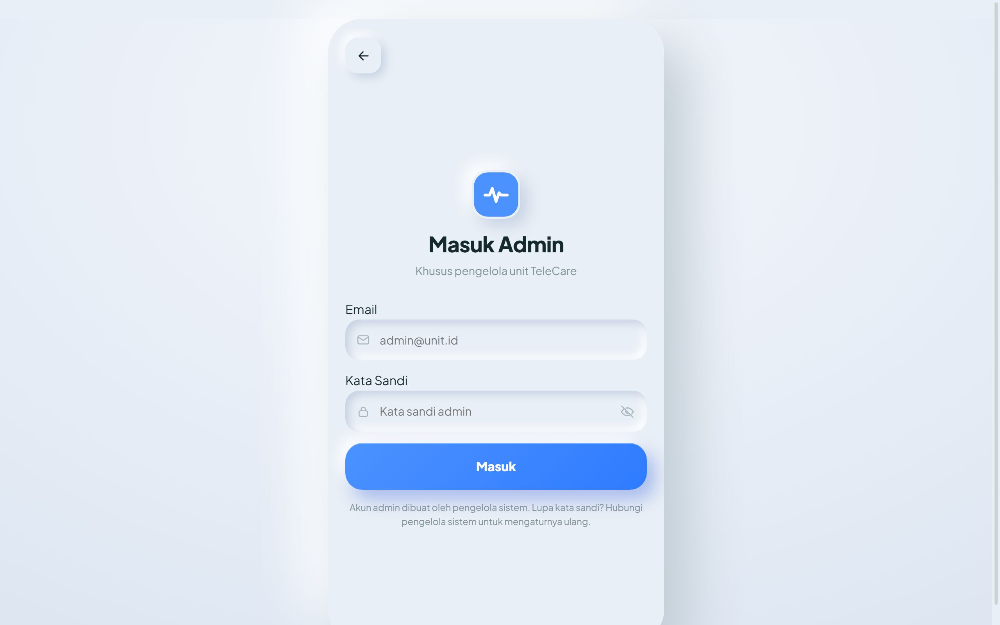
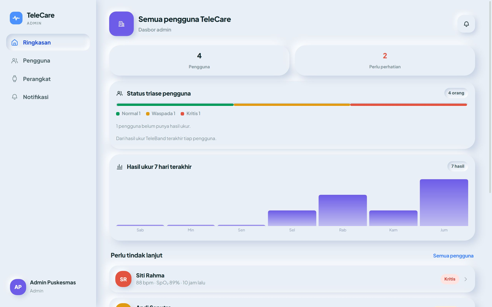
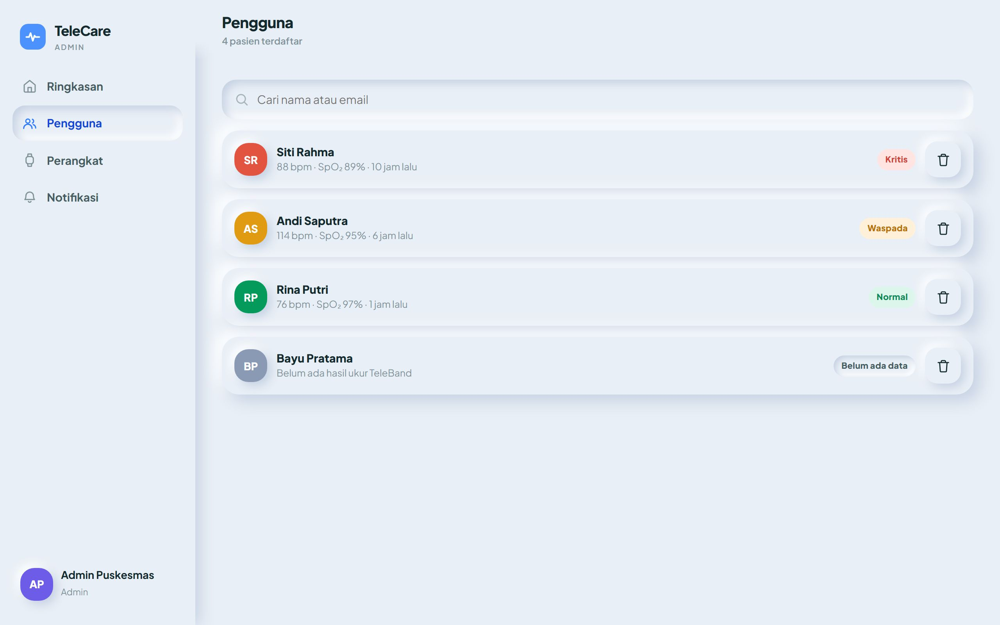
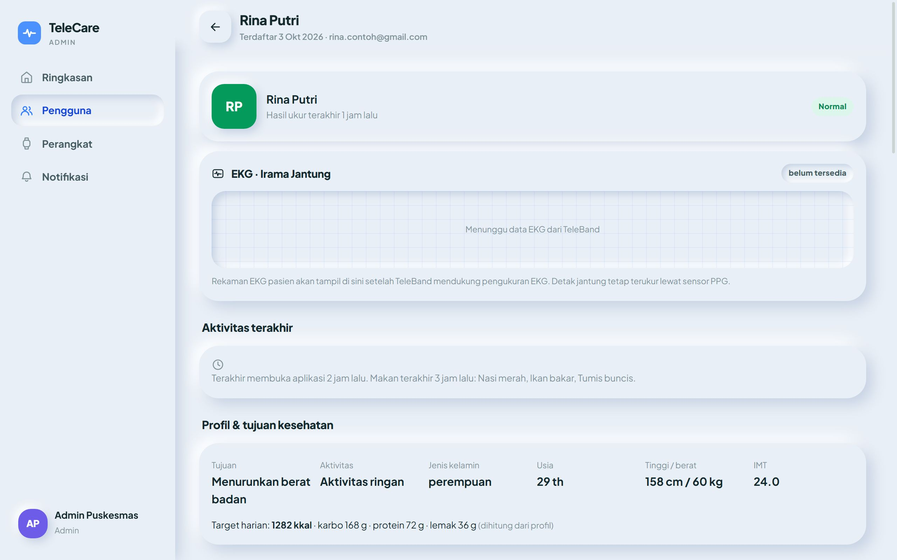
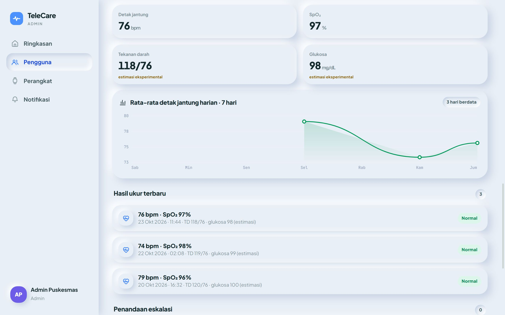
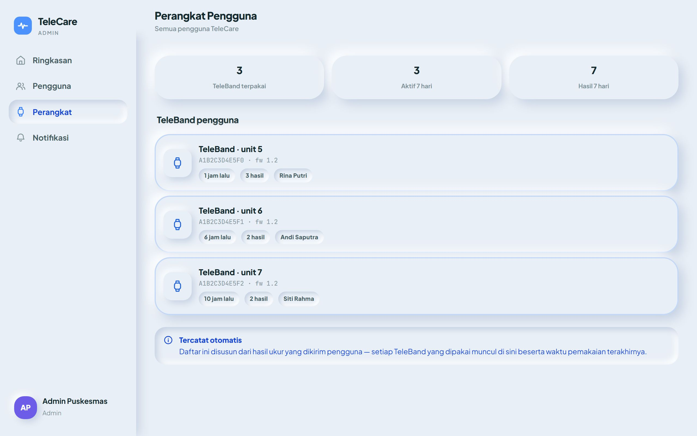

1 Peran admin
Admin memantau semua pengguna (pasien) TeleCare dari satu dasbor. Pasien muncul otomatis setelah mereka masuk ke aplikasi dengan akun Google — admin tidak perlu mendaftarkan atau mengundang mereka.
Hasil ukur TeleBand, profil & tujuan kesehatan, target dan capaian gizi, serta riwayat makanan setiap pasien.
Menandai pasien untuk tindak lanjut, mengunduh laporan CSV, dan menghapus seluruh data seorang pasien.
Mengubah hasil ukur atau catatan pasien, dan memakai akun admin sebagai pasien.
Buka dasbor hanya di perangkat Anda sendiri, keluar setelah selesai, dan jangan membagikan tangkapan layar atau berkas laporan kepada pihak yang tidak berwenang.
2 Masuk sebagai admin
- Buka alamat khusus admin:
https://app-telecare.web.app/app/#/masuk/admin
Alamat ini sengaja tidak ditautkan dari halaman mana pun. Simpan sebagai bookmark. - Masukkan email dan kata sandi akun admin, lalu tekan Masuk.
- Dasbor admin terbuka di halaman Ringkasan.
Admin tidak bisa mendaftar sendiri. Lupa kata sandi atau perlu akun admin baru? Hubungi pengelola sistem TeleCare. Akun Google pasien tidak dapat dipakai di halaman ini, dan akun admin tidak dapat dipakai sebagai pasien.

Di layar lebar (laptop/komputer) menu ada di samping kiri: Ringkasan, Pengguna, Perangkat, Notifikasi. Di HP, menu ada di bilah bawah, ditambah Profil untuk pengaturan dan tombol Keluar.
3 Ringkasan

- Pengguna — jumlah pasien terdaftar. Perlu perhatian — jumlah pasien berstatus Waspada atau Kritis.
- Status triase pengguna — komposisi Normal / Waspada / Kritis, dihitung dari hasil ukur TeleBand terakhir tiap pasien. Pasien yang belum pernah mengukur disebut terpisah.
- Hasil ukur 7 hari terakhir — jumlah pengukuran per hari dari semua pasien.
- Perlu tindak lanjut — daftar pasien Waspada/Kritis, yang paling mendesak di atas. Klik untuk membuka detailnya.
- Laporan pengguna — tombol Unduh laporan menyimpan berkas CSV (bisa dibuka di Excel/Google Sheets).
Arti status triase
| Status | Hasil ukur terakhir |
|---|---|
| Kritis | SpO₂ < 90%, atau detak jantung > 130 atau < 45 bpm |
| Waspada | SpO₂ < 94%, atau detak jantung > 110 atau < 50 bpm |
| Normal | Di luar dua kondisi di atas |
| Belum ada data | Pasien belum pernah mengirim hasil ukur |
Status hanya memakai detak jantung dan SpO₂. Tensi dan glukosa TeleBand adalah estimasi eksperimental dan tidak dipakai. Satu hasil ukur bisa keliru karena gerakan atau posisi sensor — konfirmasi ke pasien dan, bila perlu, rujuk ke tenaga kesehatan.
4 Pengguna

- Semua pasien, diurutkan dari status paling mendesak. Setiap baris menampilkan detak jantung, SpO₂, dan kapan hasil terakhir diukur.
- Kotak Cari menyaring berdasarkan nama atau email.
- Klik nama untuk membuka detail pengguna. Ikon tempat sampah = hapus data (lihat Bagian 7).
5 Detail pengguna

| Bagian | Isi |
|---|---|
| Kepala | Nama, tanggal terdaftar, email, status triase, dan kapan hasil ukur terakhir. |
| EKG · Irama Jantung | Belum tersedia — TeleBand belum mengukur EKG. |
| Aktivitas terakhir | Kapan pasien terakhir membuka aplikasi dan apa yang terakhir ia makan. |
| Profil & tujuan kesehatan | Tujuan, aktivitas, jenis kelamin, usia, tinggi/berat, IMT, dan target gizi harian (dihitung dari profil atau diketik sendiri oleh pasien). |
| Capaian gizi hari ini | Kalori, karbohidrat, protein, lemak yang sudah dimakan dibanding target. |
| Riwayat makanan | 10 catatan makanan terakhir beserta gizinya (tanpa foto). |
| Hasil ukur TeleBand | Angka terakhir, grafik rata-rata detak jantung harian 7 hari, dan 10 hasil terbaru dengan statusnya. |
| Penandaan eskalasi | Tombol Tandai eskalasi untuk mencatat bahwa pasien perlu ditindaklanjuti. |

Tanda eskalasi tidak dikirim ke server dan tidak terlihat oleh admin lain atau di perangkat lain. Catat tindak lanjut penting di sistem pencatatan resmi Anda.
6 Perangkat

Daftar setiap TeleBand (berdasarkan nomor seri) yang pernah mengirim hasil ukur: nomor unit, versi firmware, kapan terakhir dipakai, jumlah hasil, dan siapa pemakainya. Berguna untuk melacak gelang yang lama tidak dipakai. Angka di atasnya: jumlah TeleBand terpakai, yang aktif 7 hari terakhir, dan jumlah hasil 7 hari.
7 Menghapus data pengguna
- Di Pengguna tekan ikon tempat sampah pada baris pasien, atau di detail pengguna tekan Hapus data pengguna.
- Baca konfirmasinya, lalu tekan Hapus permanen.
Profil, seluruh riwayat makanan, dan seluruh hasil ukur pasien itu dihapus dari server. Akun Google pasien sendiri tidak terhapus: bila ia membuka aplikasi lagi, ia terdaftar kembali, dan profil yang masih tersimpan di HP-nya dapat terkirim ulang. Hapus hanya atas permintaan pasien atau sesuai kebijakan pengelolaan data.
8 Laporan CSV
Tombol Unduh laporan (Ringkasan) menghasilkan berkas laporan-pengguna-TTTTBBHH.csv (mis. laporan-pengguna-20261023.csv) berisi satu baris per pasien:
| Kolom | Isi |
|---|---|
| Nama, Terdaftar, Status | Identitas dan status triase saat laporan dibuat |
| Hasil terakhir, Detak (bpm), SpO2 (%) | Hasil ukur TeleBand terakhir |
| TD estimasi, Glukosa estimasi | Estimasi eksperimental — jangan dipakai untuk keputusan klinis |
| Hasil ukur 30 hari | Jumlah pengukuran 30 hari terakhir (kepatuhan memakai gelang) |
| Penandaan eskalasi (perangkat ini) | Jumlah tanda eskalasi yang dibuat di peramban ini |
Simpan berkas laporan di tempat yang aman; berkas ini memuat data kesehatan pasien.
9 Keluar & kebiasaan aman
- Keluar setelah selesai: Profil → Keluar. Anda kembali ke halaman masuk admin.
- Data di dasbor diperbarui setiap kali halaman dibuka; setelah ada perubahan, tunggu sekitar 1 menit lalu buka ulang halamannya.
- Jangan memakai akun admin di perangkat umum, dan jangan menyimpan kata sandi di peramban milik orang lain.
10 Bila ada masalah
| Pesan / gejala | Penyebab & solusi |
|---|---|
| “Email atau kata sandi salah.” | Periksa penulisan. Masih gagal? Minta pengelola sistem mengatur ulang kata sandi. |
| “Akun ini bukan akun admin.” | Akun belum didaftarkan sebagai admin. Hubungi pengelola sistem. |
| “Sesi admin berakhir. Silakan masuk kembali.” | Sesi kedaluwarsa atau sudah keluar di tempat lain. Masuk lagi. |
| “Akses ditolak server.” | Akun tidak berhak membuka data itu, atau ada masalah konfigurasi server. Hubungi pengelola sistem. |
| “Server tidak terjangkau.” | Periksa koneksi internet, lalu buka ulang halaman. |
| Pasien tidak muncul di daftar | Pasien belum pernah masuk ke aplikasi dengan akun Google. Minta ia membuka aplikasi sekali. |
| Hasil ukur pasien tidak ada / tidak bertambah | Hasilnya mungkin masih menunggu kirim di HP atau gelang pasien (tanpa internet), atau gelang belum disambungkan ke aplikasi. |
| Angka di dasbor belum berubah | Tunggu sekitar 1 menit, lalu buka ulang halaman. |
TeleCare — Panduan Admin · Penelitian Health 5.0 · Program Studi Fisika, FMIPA Universitas Sebelas Maret · Oktober 2026
Dokumen terbatas — hanya untuk admin TeleCare.